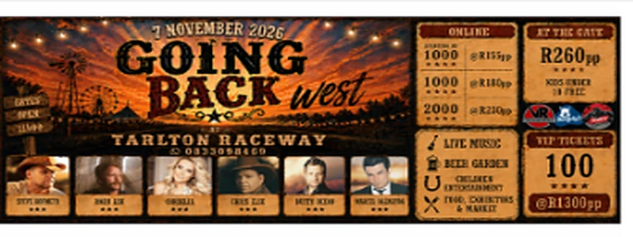
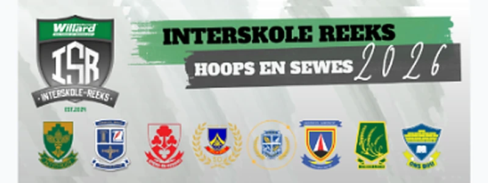
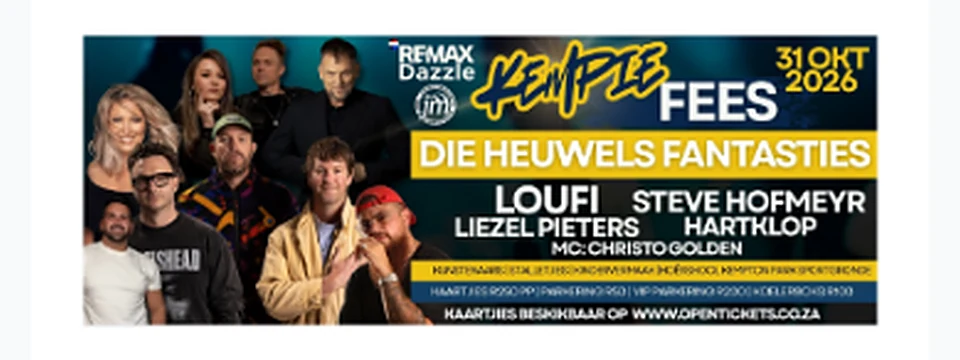
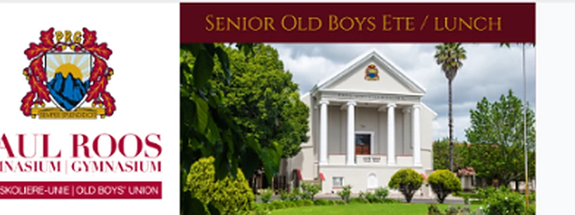
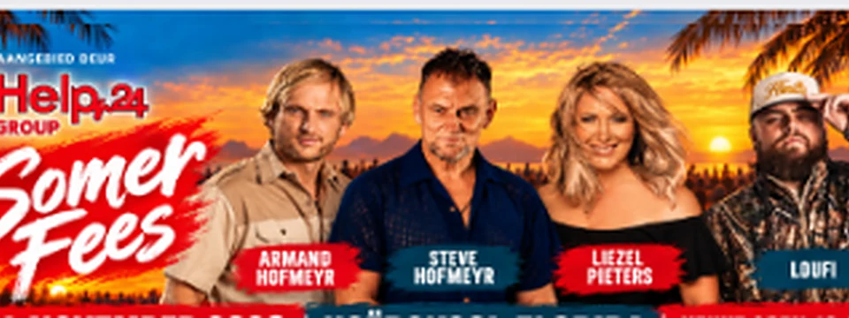
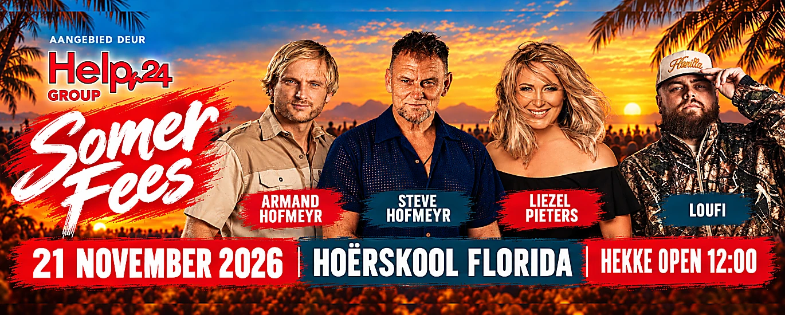

Music
Music
R250
View Event
LIVE EVENTS. REAL EMOTIONS.
Discover the best concerts, sports, theatre and unforgettable experiences across South Africa.
Explore EventsChoose a category and search to explore matching events.
Music

Festival
Sports
Festival
Community
FestivalEvents and advertised prices are subject to availability and change. Browse all events for more listings.
Upcoming dates are based on the public Open Tickets event listing; availability and prices can change.
06NOVMusic
21NOVFestivalNo events match this selection.
THE LIVE EXPERIENCE
From unforgettable live music to stadium nights and festival energy — experience the moments that bring us together.
FIND YOUR NEXT EXPERIENCE
Explore concerts, sports, theatre, family events, comedy, festivals and more with richer, more natural supporting imagery.
Simple, secure and fast ticket purchasing.
Official tickets from authorised organisers.
We're here to help before, during and after your event.
Concerts, sports, theatre, comedy, arts and more.